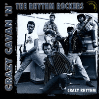

Crazy Cavan and the Rhythm Rockers - Crazy Rhythm (Album, 2001)
01 - She's The One To Blame (1:55)
02 - Teddy Boy Rock 'N' Roll (1:45)
03 - Sadie (3:22)
04 - Bop Little Baby (2:14)
05 - Cross My Heart (2:11)
06 - Caroline (2:49)
07 - Wildest Cat In Town (1:41)
08 - Got A Date With Sally (2:05)
09 - Fancy Nancy (2:21)
10 - Rockabilly Star (1:50)
11 - Why Can't We Be (2:43)
12 - Rita (3:03)
13 - Hard Rock Cafe (2:14)
14 - Crazy Boogie (2:17)
15 - Marilyn (2:06)
16 - Going Down The Road (2:23)
17 - Teddy Boy Boogie (2:04)
18 - Crazy Rhythm (2:52)
19 - What'cha Gonna Do (1:49)
20 - Tennessee Border (2:02)
© Fury Records 1975 © Crazy Rhythm 2001 :: [CRCD06R]
Notes
United Kingdom, South Wales.
Cavan Grogan - Vocals
Lyndon Needs - Lead guitar, Acoustic guitar
Terry Walley - Rhythm guitar, Acoustic guitar
Don Kinsella - Bass
Mike Coffey - Drums
Terry Walley - Lead guitar on tracks 3, 6, 12
Lyndon Needs - Second vocals, Vocals on tracks 3, 15; Rhythm guitar on track 12
Don Kinsella - Vocal on track 12
Recorded with The Exalto Recording Unit, Amsterdam July 1975
Engineered by Jan Exalto, Bert Rockhuizen
Songs are written-by (here and further: or credited to) Cavan Grogan: "She's The One To Blame", "Bop Little Baby", "Cross My Heart", "Caroline", "Wildest Cat In Town", "Got A Date With Sally", "Fancy Nancy", "Rockabilly Star", "Why Can't We Be"
Songs are written-by Lyndon Needs: "Teddy Boy Rock 'N' Roll", "Sadie", "Hard Rock Cafe", "Marilyn, "Going Down The Road", "Crazy Rhythm"
Songs are written-by Cavan Grogan/Lyndon Needs: "Teddy Boy Boogie"
Song is written-by Don Kinsella: "Rita"
Song is written-by the Rhythm Rockers: "Crazy Boogie"
Song is written-by Ronnie Hawkins/McGill: "What You Gonna Do"
Song is written-by Jimmy Work: "Tennessee Border"
reference information: Discogs®
Review
004/366 (Project 366)
When listening to this Teddy Boy band, it becomes clear why they are truly legendary. And it becomes clear how much they influenced Teddyboys and the scene in general. Teddy Boy Rock'N'Roll and Rockabilly with rustic powder are so attractive! And the repertoire itself is definitely cool, but not at all monotonous or boring. Rather a variety of moods and themes. But always cool. Even with tender songs or with crazy rhythms, with fancy singing style or with thoughtful meaning. Always sounds uniquely enchanting and clear enough to like it.
I did not manage to find original LP (1970s) or even released later CDs and my experience is based on digital release of 2001 CD (thanks to all these modern technologies and an ability to purchase it via digital stores). Sound itself is beauty but if to add charm of physical media - then there will be complete magic, perhaps. And this is another point of their old days chic.
So, this album with a self-explanatory name. All tracks are written by the band (excluding two bonus tracks on CD). Their songs became hymns. Their lyrics became quotes. Their sound is a primer for many.
First track "She's The One To Blame" is a good appetizer. Pretty raw and teddy Rockabilly. With chanting, speed, rollin' and rocking. Very smooth flow of energy and good work of bass. The second track "Teddy Boy Rock 'N' Roll" continues this manner. But with slightly crazier style of screech and with a much larger voice play. I think that this is a lovely piece for the most of Teddy Boys. Better can be only fourth track "Bop Little Baby". Which just blows away completely by its loony tune. Amazes enough and surely. I like it pretty much since of its catchy sound. But back to the tracklist order. Third track "Sadie" and also further "Cross My Heart" (fifth) with "Caroline" (sixth) are pearls of delicacy, sometimes rustic tone, melodious vibrations and sweet sensations. "Caroline" even with a pretty languid voice. Taking all the kind of tenderness of these songs - the seventh track "Wildest Cat In Town" just bursts in like a whirlwind. Or like a twister maybe! The eighth song - "Got A Date With Sally" - already with "all set up and ready" feelings. So, bopping motive is well enough for dancing. But only as a warming up before the ninth hurricane - "Fancy Nancy". Craze! Perhaps the only so nifty track on album. Country bop appears with "Rockabilly Star". Tenth track and eleventh track "Why Can't We Be" are good dose of stylish Rockabilly. Tough singing and hitting the chords. From time to time with sweet inserts of quivering chanting or whoopie beat. Narrative good stories. "Rita" with the continuation of this mood. This twelfth track is even somewhat close to hillbilly. And melody is so heartwarming. With all of these songs I really like this kind of plain lyrics, however, with clever play on words. Twistin' and yelling returns with a thirteenth track. "Hard Rock Cafe" combines many interesting points from other songs (perhaps the brightest). And brings some fresh ones. Then instrumental tune appears, "Crazy Boogie" is indeed crazy and maybe even killer one! Well done and quite loud! Fourteenth track "Marilyn" well complements the on-going stream of whirligig and composition is yet another song dedicated to womens. "Going Down The Road", "Teddy Boy Boogie", "Crazy Rhythm" is a good set of Teddy Boy Rock'N'Roll with high influence of straight up Rockabilly. Very indicative variety of sound and sophistication of the selected way. And this is with all the simplicity of music. Swiftness of rhythm, abruptness of vocals, moxie of guitars.. all this and even more gives honeyed thrills. The two covers - "What'cha Gonna Do" and "Tennessee Border" - are very well matched to the style of the group. Actually, Crazy Cavan and the Rhythm Rockers with suitable pronunciation and sound structure, which makes them enough atmospheric. Album with good sound quality and it is especially pretty!
Some songs may look alike. But not with a close look of them. All songs are quite fledged and their sound becomes "familiar" very quickly. Under these songs you can end the day and also start a new day with them. There is a feeling that all this was done by strong enthusiasts. Who just love that sound... and this crazy rhythm.